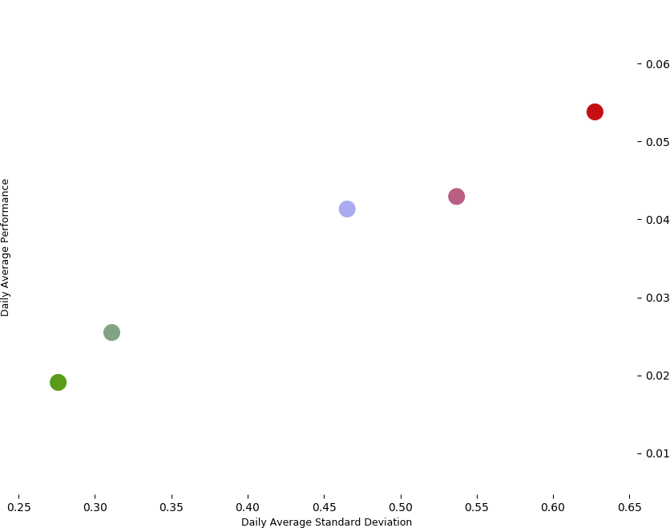

The following charts have been created using Python (matplotlib) with data until the end of 2017. Data is derived from Yahoo finance, which held data back to 29-March 2016 for all of the underlying ETFs.
The following chart presents a visual representation of the asset subcategory allocation per risk-profile as described in how it works:
The following chart shows the performance over time for the various risk profiles. The start date is 29-March 2016 (index = 100) and end date is 31-dec 2017, the chart shows weighted performance assuming a constant rebalancing of the portfolio:
The following chart shows the average daily risk (standard deviation) vs. average daily return and plots the different risk profiles for the given timeframe:
The following chart shows the sharpe ratio for each of the risk profiles and is therefore a different way of presenting the risk/return performance for each portfolio:
The following chart shows the average risk (standard deviation) and average return but does it per asset class subcategory (ie. ETF) over the given timeperiod:
The following chart shows the sharpe ratio for each of the assets (ETFs) as an average of their performance between March-2016 and Dec-2017